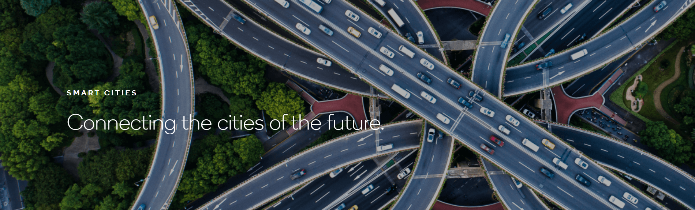

什么是智能城市？
“智慧城市”听起来是一个比较模糊的术语，但如果说智能城市是基于物联网技术的一种概念会比较好理解。 想想智能家居的原理，智能家居是关于多个低功率数字设备连接和相互通信以创建一个更有效的“在线”家庭，那么智能城市就是关于各种公共设施和基础设施连接和协调到同一终端。 正如布里斯托尔（英国英格兰西南区域的名誉郡）开发计划所解释的那样，“使用数据传感器，智能城市技术将能够日常实时事件的响应，包括交通拥堵，城市垃圾处理，娱乐活动，舆情监测，能源供应等。” 在智能城市，智能汽车将能够与行人的智能手机以及交通信号灯和其他汽车进行通信，以预测交通状况，甚至（一旦自动驾驶汽车成为主流）避免碰撞。在智能城市，汽车也可以与他们驾驶区域内的街道照明进行通信交互，从而判断哪些路段属于使用频率高的，以此作为此路段被照亮时间段参考，从而节省城市的电力和金钱，同时保证驾驶员的安全。
为此，需要一种新型移动网络来处理这种大量增加的数据负载，这样的移动网络就需要5G技术。 值得庆幸的是，智能城市的建设不需要“完全推翻原有的基础城市建设而重新开始”。相反，它们将以我们现有所居住的城市建设和秩序为基础，只是增强了比以往更高效，清洁和安全的运作方式。
智能城市将从2020年开始实现5G网络连接，从而实现其全面的互联，但目前已经有一些孤立的智能城市计划正在运行，为城市提供预测和监测使用。